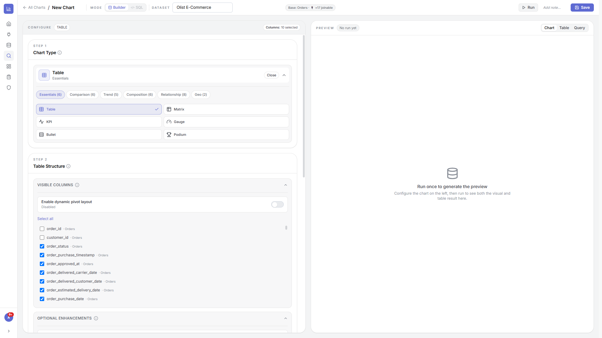
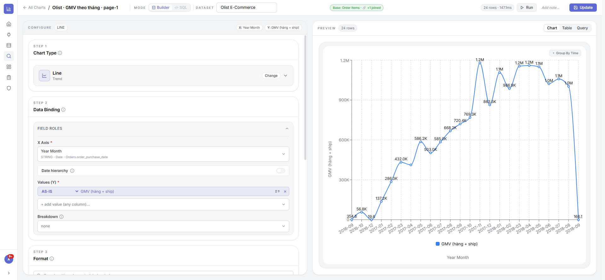
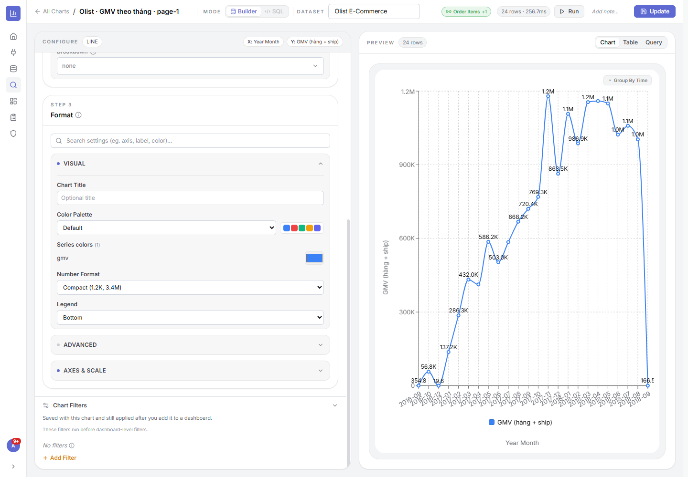
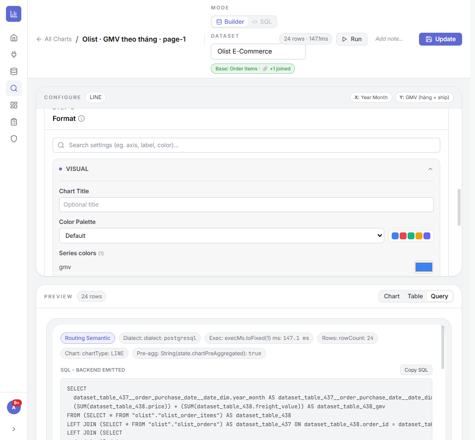
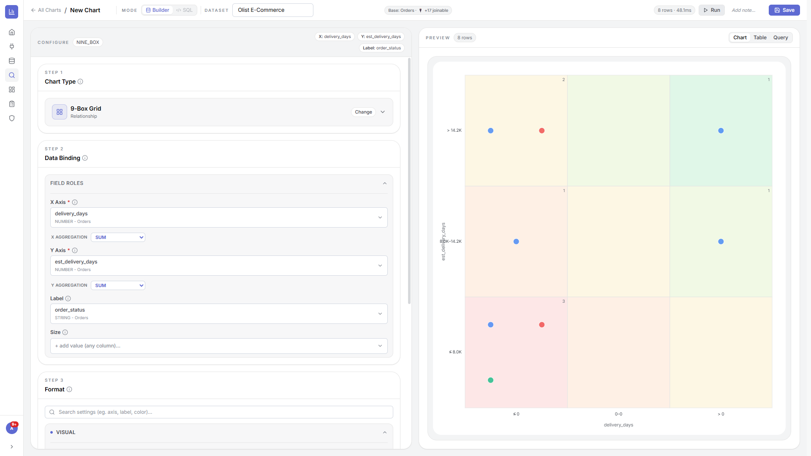

3.1Bước 1 — Chọn loại biểu đồ
Vùng này để làm gì: chọn hình thức trực quan trước, vì nó quyết định Bước 2 cần gắn những trường nào. 33 loại được gom vào 6 nhóm theo mục đích — chọn nhóm rồi chọn loại.
Chọn nhóm nào khi…
- Essentials — số/bảng cốt lõi: Table, Matrix (bảng & bảng chéo), KPI (một con số nổi bật), Gauge, Bullet (so với mục tiêu), Podium (xếp hạng top). → khi cần “con số” hơn “hình”.
- Comparison — so sánh giữa các hạng mục: Bar / Horizontal / Grouped / Stacked Bar, Waterfall (tăng/giảm lũy kế), Heatmap, Treemap, Funnel (phễu chuyển đổi).
- Trend — diễn biến theo thời gian: Line, Area, Time Series, Bar + Line (cột + đường 2 trục).
- Composition — cơ cấu/tỷ trọng: Pie, Donut, Polar, Sunburst (phân cấp), Sankey (luồng).
- Relationship — quan hệ giữa 2+ chỉ số: Scatter, Bubble, Radar, 9-Box Grid.
- Geo — bản đồ: Point Map (điểm), Region Map (vùng).
⚙ Cách làm
- Vào Explore → New Chart, chọn Dataset ở thanh trên.
- Ở Bước 1, bấm tab nhóm (Essentials/Comparison/…) rồi bấm loại biểu đồ.
- Đổi ý lúc nào cũng được: bấm Change ở thẻ loại để chọn lại (cấu hình tương thích sẽ được giữ).

3.2Bước 2 — Gắn dữ liệu (Field Roles)
Vùng này để làm gì: bạn “đổ” các cột dữ liệu vào những vai trò mà biểu đồ cần. Mục có dấu * là bắt buộc. Tuỳ loại biểu đồ, các vai trò hiện ra sẽ khác nhau — dưới đây là các vai trò phổ biến:
- X Axis (trục/chiều phân tích) — cột dùng để chia nhóm/đặt lên trục ngang (vd Tháng, Sản phẩm, Khu vực). Với cột ngày có thêm công tắc Date hierarchy để khoan sâu Năm → Quý → Tháng → Ngày.
- Values / Y (giá trị cần đo) — con số muốn hiển thị, kèm hàm tổng hợp:
- AS-IS — lấy nguyên giá trị (không gộp).
- SUM — cộng tổng · AVG — trung bình · MIN/MAX — nhỏ nhất/lớn nhất.
- COUNT — đếm số dòng · COUNT DISTINCT — đếm giá trị khác nhau (vd số khách duy nhất).
- Breakdown (tách nhóm/màu) — tách mỗi giá trị theo một cột nữa (vd doanh thu theo kênh) → tạo nhiều cột/đường/lát màu.
- Vai trò riêng theo loại: Scatter/Bubble/9-Box có X/Y (kèm hàm tổng hợp) + Size (kích thước) + Label; Time Series có trường thời gian; Bảng có chọn cột hiển thị / pivot (hàng × cột).
⚙ Cách làm
- Chọn cột cho X Axis (chiều) và Values (Y) (giá trị).
- Mở ô hàm tổng hợp bên cạnh giá trị → chọn SUM/AVG/COUNT… cho đúng ý nghĩa.
- (Tuỳ chọn) thêm Breakdown để tách nhóm; với cột ngày bật Date hierarchy.
- Bấm Run để xem kết quả ở khung bên phải.

3.3Bước 3 — Định dạng (Format)
Vùng này để làm gì: làm biểu đồ dễ đọc & đẹp. Có ô tìm thiết lập ở đầu (gõ “màu”, “nhãn”, “trục”…) và các nhóm gập/mở:
- VISUAL (hiển thị cơ bản):
- Chart Title — tiêu đề biểu đồ (để trống thì dùng tên chart).
- Color Palette — bảng màu: Default / Vibrant / Classic / Monochrome / Pastel; có thể đổi màu từng series riêng.
- Number Format — cách hiển thị số: Auto (raw), Compact (1.2K, 3.4M), Full Number (1,234), Percent (%), Currency ($).
- Legend — vị trí chú giải: Top / Bottom / Left / Right / Hidden.
- ADVANCED (nâng cao): bật/tắt nhãn dữ liệu (hiện số ngay trên cột/điểm) & vị trí nhãn, sắp xếp (sort), giới hạn Top/Bottom N, kiểu đường/độ dày/điểm cho Line, độ trong cho Area, đường mốc (benchmark)…
- AXES & SCALE (trục & thang đo): đặt tiêu đề trục X/Y, giá trị nhỏ nhất/lớn nhất của trục Y, đơn vị hiển thị (nghìn/triệu/tỷ), bật/tắt lưới.
- Chart Filters (bộ lọc của riêng biểu đồ): lọc dữ liệu lưu kèm chart và chạy trước bộ lọc cấp dashboard — dùng để cố định phạm vi (vd chỉ đơn “delivered”).
⚙ Cách làm
- Mở nhóm cần chỉnh (hoặc gõ vào ô tìm thiết lập), đổi giá trị → biểu đồ cập nhật ngay.
- Bật nhãn dữ liệu ở ADVANCED nếu muốn người xem thấy số ngay trên hình.
- Đặt Top/Bottom N khi cột/lát quá nhiều (vd chỉ Top 10).

3.4Xem trước · Run · Save · chế độ SQL
Vùng này để làm gì: chạy thử, đối chiếu số, và lưu biểu đồ. Khung xem trước (bên phải) có 3 thẻ:
- Chart — xem hình trực quan.
- Table — xem bảng số đúng như dữ liệu vẽ ra (để đối chiếu).
- Query — xem câu SQL hệ thống chạy thẳng trên nguồn + dialect + thời gian chạy + số dòng. Đây là bằng chứng dữ liệu là real-time (không phải bản sao cũ); có nút Copy SQL.
⚙ Cách làm
- Bấm Run mỗi khi đổi cấu hình để cập nhật xem trước.
- (Tuỳ chọn) đổi Base table ở thanh trên để dùng bảng gốc khác (các bảng đã nối hiện ở “joinable”).
- Bấm Add note ghi lại ý đồ/giả định của biểu đồ cho người sau.
- Bấm Save (chart mới) hoặc Update (chart có sẵn) để lưu — sau đó có thể đưa vào Dashboard.

3.5Biểu đồ nâng cao — ví dụ 9-Box Grid MỚI
Là gì: các loại quan hệ/nâng cao có cấu hình riêng. 9-Box chia lưới 3×3 theo hai trục có hàm tổng hợp (SUM/AVG) + nhãn phân nhóm — hữu ích để đánh giá danh mục/nhân sự.
⚙ Cách làm
- Chọn loại 9-Box Grid ở nhóm Relationship.
- Gán X Axis và Y Axis (chọn hàm tổng hợp cho mỗi trục), gán Label để phân nhóm điểm.
- Run để xem lưới 3×3.
